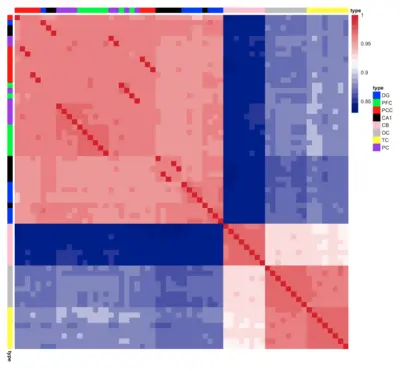
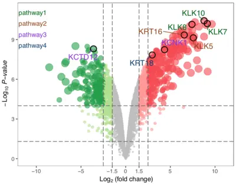
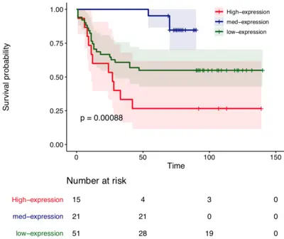
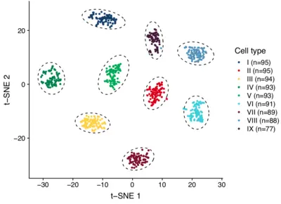
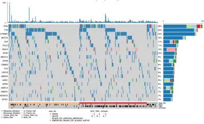
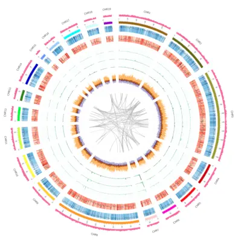

SCIENTIFIC FIGURE LIBRARY
Your published scientific figures
Local Published · global library on this machine
Browse your Releases here. The agent waits until you confirm one exact template.




